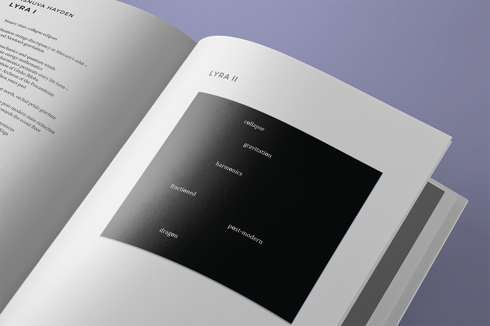
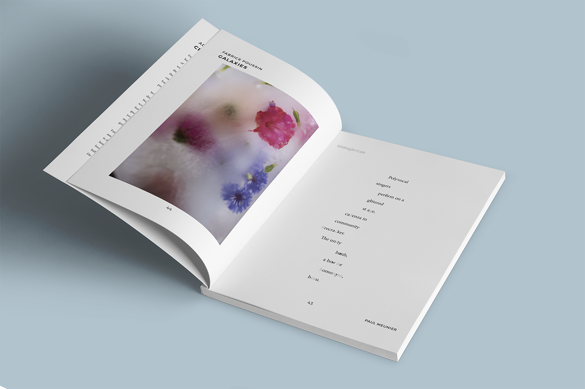

- 

- 

NōD Magazine
Art Director and Editor
NōD Magazine is the University of Calgary's sole literary publication, est. 2005. With four other editors I helped revive the publication in 2015. In doing so I also modernized the magazine's layout and its marketing materials. I have designed and typeset issues 19, 20 and 21, along with posters and web materials for each. I also contributed to a successful Kickstarter campaign and grant proposal that will help keep the publication funded for at least five more years.